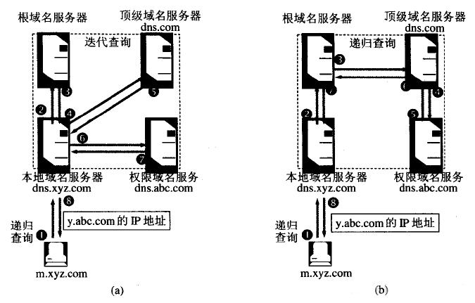

Web概述¶
Web概述¶
Web概念¶
Web（World Wide Web）即全球广域网，也称为万维网，它是一种基于超文本和HTTP的、全球性的、动态交互的、跨平台的分布式图形信息系统。是建立在Internet上的一种网络服务，为浏览者在Internet上查找和浏览信息提供了图形化的、易于访问的直观界面，其中的文档及超级链接将Internet上的信息节点组织成一个互为关联的网状结构。(参考百度百科
Web 应用¶
纯静态
静态+动态
.......等
Web应用举例: 你浏览器看到的大部分都是Web应用，网页邮件，购物，4399，CSDN......
Web五大要素¶
URL + HTTP + HTML(以及XML) + Web浏览器 + Web服务器
- URL
Uniform Resource Locator,统一资源定位符
protocol://hostname[:port]/path/[;parameters][?query]#fragment
还不会就给👴百度 - HTTP
超文本传输协议
应用层协议，架构在TCP协议之上，规定WWW服务器与浏览器之间信息传递规范 - HTML
超文本标记语言 -
Web浏览器
Chrome
Firefox
IE
Safari...... -
Web服务器
Apache
Tomcat
Nginx
Microsoft IIS
IBM WebSphere
WebLogic
Web工作原理¶

HTTP流程简述¶
整个http请求流程¶

解析URL
输入网址后，浏览器会效验网址的合法性
protocol://hostname[:port]/path/[;parameters][?query]#fragment
不合法就跳到默认搜索引擎
域名解析¶
域名解析流程
 如果有任何一个步骤中，找到了域名对应的ip，则直接返回，后面的步骤不再进行
如果有任何一个步骤中，找到了域名对应的ip，则直接返回，后面的步骤不再进行
- 浏览器DNS缓存:
-
查看操作系统缓存:
Mac:
Windows:ipconfig /displaydns
linux: 除非你bai配置了本地duDNS缓存（DNS选127.0.0.1），否则一般情况下是没有缓存的 -
读取hosts文件: C:\Windows\System32\drivers\etc\hosts
- 向域名服务器请求解析
向本地配置的DNS服务器发送域名解析请求，通过UDP协议向DNS的53端口发起请求
先向本地DNS服务器进行递归查询，若查不到再向根服务器进行迭代查询

请求与响应¶
TCP连接 三次握手¶
发起http请求¶
GET / HTTP/1.1
Host: www.baidu.com
Connection: close
Pragma: no-cache
Cache-Control: no-cache
Upgrade-Insecure-Requests: 1
User-Agent: Mozilla/5.0 (Macintosh; Intel Mac OS X 10_15_5) AppleWebKit/537.36 (KHTML, like Gecko) Chrome/83.0.4103.116 Safari/537.36
Accept: text/html,application/xhtml+xml,application/xml;q=0.9,image/webp,image/apng,*/*;q=0.8,application/signed-exchange;v=b3;q=0.9
Sec-Fetch-Site: none
Sec-Fetch-Mode: navigate
Sec-Fetch-User: ?1
Sec-Fetch-Dest: document
Accept-Encoding: gzip, deflate
Accept-Language: en,zh;q=0.9,zh-CN;q=0.8
Cookie: BIDUPSID=E2772A998B407BCDD25FC26F56221B59; PSTM=1591537281; BD_UPN=123253; BDORZ=B490B5EBF6F3CD402E515D22BCDA1598; BAIDUID=4F7679F902A96621C8F5BF284160EAB5:FG=1;
负载均衡¶
接收到HTTP请求之后，就到服务器的负载均衡工作了
负载均衡（Load Balance），意思是将负载（工作任务，访问请求）进行平衡、分摊到多个操作单元（服务器，组件）上进行执行。是解决高性能，单点故障（高可用），扩展性（水平伸缩）的终极解决方案

服务器端响应http请求¶
HTTP/1.1 200 OK
Bdpagetype: 1
Bdqid: 0xb08d261c001c778f
Cache-Control: private
Content-Type: text/html;charset=utf-8
Date: Mon, 06 Jul 2020 15:13:21 GMT
Expires: Mon, 06 Jul 2020 15:13:18 GMT
Server: BWS/1.1
Set-Cookie: BDSVRTM=0; path=/
Set-Cookie: BD_HOME=1; path=/
Set-Cookie: H_PS_PSSID=xxxxxxxxxxxxxxx; path=/; domain=.baidu.com
Strict-Transport-Security: max-age=172800
Traceid: 1594048401063549517812721866424094324623
X-Ua-Compatible: IE=Edge,chrome=1
Connection: close
Content-Length: 287285
常见响应状态码¶
| 应答头 | 状态英文名称 | 中文描述 |
|---|---|---|
| 200 | OK | 请求成功。一般用于GET与POST请求 |
| 302 | Found | 表示临时移动。 |
| 400 | Bad Request | 客户端请求的语法错误，服务器无法理解 |
| 404 | Not Found | 服务器无法根据客户端的请求找到资源 |
| 500 | Internal Server Error | 服务器内部错误，无法完成请求 |
| 502 | Bad Gateway | 从远程服务器接收到了一个无效的响应 |